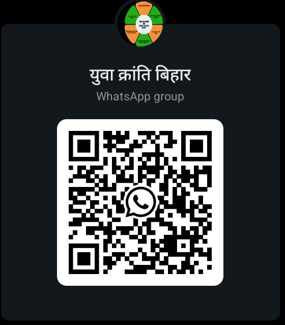

हर गांव से एक डिजिटल नेता!
Yuva Kranti Bihar is not just a movement — it’s a digital revolution led by the youth, for the youth. We are on a mission to transform Bihar’s rural and semi-urban youth into influential digital leaders, equipped with the skills to lead political change and build an empowered society.
Through our grassroots training programs, mentorship, and strategic guidance, we help passionate individuals become content creators, campaign strategists, and community influencers. We believe that the future of Bihar lies in its villages — and our goal is to make sure every village has its own digital leader.
Our work is not just about numbers — it's about nurturing leadership, promoting awareness, and giving Bihar's youth a voice in the digital age.
Founder: Shravan Kumar
Instagram: @asdsfact
WhatsApp: +91 8102681022
Email: shravanku81026@gmail.com
Scan this QR code to join our growing network of youth leaders.
युवा क्रांति बिहार - WhatsApp Group
Are you a student, creator, or local youth who wants to make an impact through social media and politics? Join Yuva Kranti Bihar today and become a trained leader of tomorrow.